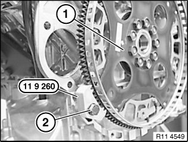
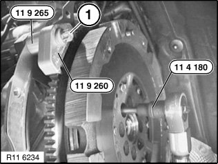
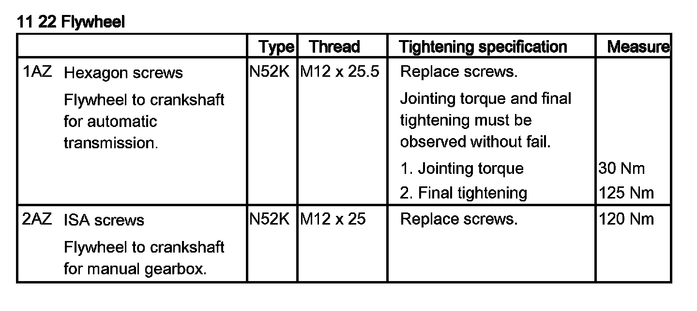

Flywheel: Service and Repair
11 22 500 Removing and installing/replacing flywheel (N52K)Special tools required:
Important!
Aluminum-magnesium materials.
No steel screws/bolts may be used due to the threat of electrochemical corrosion.
A magnesium crankcase requires aluminum screws/bolts exclusively.
Aluminum screws/bolts must be replaced each time they are released.
Aluminum screws/bolts are permitted with and without color coding (blue).
For reliable identification:
Aluminum screws/bolts are not magnetic.
Jointing torque and angle of rotation must be observed without fail (risk of damage).
Necessary preliminary tasks:
^ Remove transmission
^ Remove clutch

For vehicles with optional extra SA205 (automatic transmission):
Secure flywheel (1) with existing transmission bolt (2) and special tool 11 9 260.
Installation:
Replace aluminum screws.
Unfasten flywheel screws.
Tightening torque 11 22 1AZ.
Installation:
Flywheel (1) is secured with an alignment pin.
Fit new flywheel screws.
Clean all threads for flywheel screws in crankshaft.

For vehicles without optional extra SA205 (automatic transmission):
Secure flywheel with transmission bolt (1) and special tool 11 9 260 and 11 9 265.
Installation:
Replace aluminum screws.
Release flywheel bolts with special tool 11 4 180/
Tightening torque 11 22 2AZ.
Installation:
Flywheel is secured with a dowel pin.
Fit new flywheel screws.
Clean all threads for flywheel screws in crankshaft.
Assemble engine.
